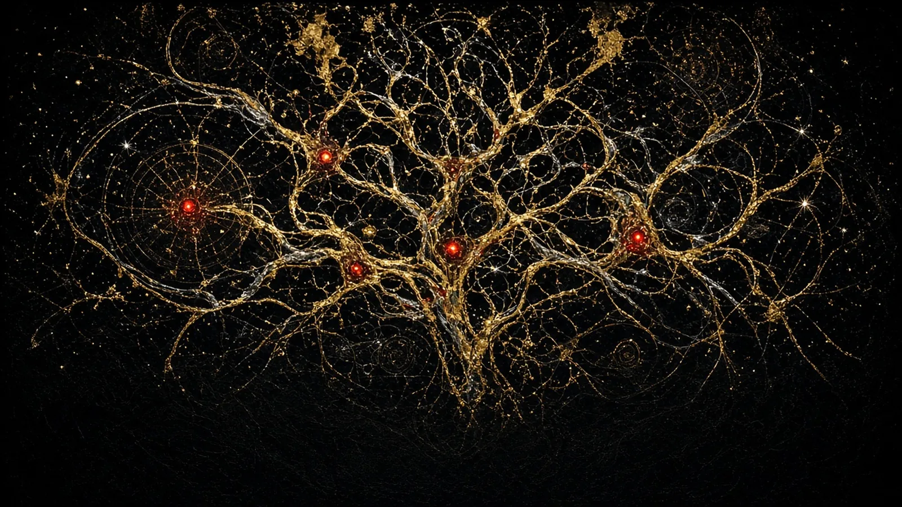

Neuroscience of Consciousness
What brain science has measured about consciousness, and what it cannot decide.
Everything measured on this page is ◆ Science, with its limits stated. What neural correlates mean for the soul is ◇ Philosophy. Whether consciousness requires a soul is a question for ◇ Philosophy or ✦ Faith, never for science alone.
Neural correlates of consciousness
◆ Science The neural correlates of consciousness are the minimal brain activity sufficient for a specific conscious experience. Koch, Massimini, Boly and Tononi reviewed the progress and the problems in 2016 (Nature Reviews Neuroscience, PMID 27094080; SEP: The Neuroscience of Consciousness; overview).
Two leading theories
◆ Science Global neuronal workspace theory ties conscious access to information being broadcast widely across the brain (Dehaene and Changeux 2011, Neuron; Mashour et al. 2020, Neuron; overview).
◆ Science Integrated information theory ties consciousness to the integrated cause-and-effect structure of a physical system (Tononi, Boly, Massimini and Koch 2016, Nature Reviews Neuroscience; IEP: Integrated Information Theory; overview).
◆ Science In 2025 the Cogitate Consortium published a preregistered adversarial collaboration testing the two theories against each other with 256 participants. In the authors’ words, the results “align with some predictions of IIT and GNWT, while substantially challenging key tenets of both theories” (Nature, 2025; on the method; Templeton World Charity Foundation, funder).
Hidden awareness
◆ Science Some patients diagnosed as unresponsive show brain activity indicating awareness, which exposes the limits of judging consciousness from behaviour alone (Monti et al. 2010, New England Journal of Medicine).
◇ Philosophy Correlation is not identity, and it is not cause. Brain data show how tightly experience is coupled to the brain; they do not by themselves settle what experience is.
The science of conscious will
◆ Science Libet and colleagues (1983) found that the readiness potential began before people reported awareness of their intention to move (Brain, PMID 6640273; overview).
◆ Science Schurger, Sitt and Dehaene (2012) showed that the readiness potential can be explained by spontaneous neural fluctuations crossing a threshold, rather than a causal pre-decision signal (PNAS, PMID 22869750).
◆ Science Wegner and Wheatley (1999) showed that the experience of willing an act can be manipulated (“Apparent mental causation,” American Psychologist); see also Wegner’s book The Illusion of Conscious Will (Daniel Wegner). A 2017 review assesses the research tradition (Frontiers in Human Neuroscience).
◇ Philosophy Simple finger-flick tasks do not model deliberate, reasoned decisions, so these studies leave the larger question of free will open.
Contemplative and mystical neuroscience
◆ Science Brain studies of long-term meditators (Lutz et al. 2004, PNAS), of meditation (Newberg et al. 2001, Psychiatry Research), of Carmelite nuns recalling mystical experience (Beauregard and Paquette 2006, Neuroscience Letters), and of psilocybin-occasioned mystical-type experiences (Griffiths et al. 2006; Griffiths et al. 2008) describe neural and psychological correlates and the meaning people report.
◇ Philosophy Such findings cannot show whether the source of an experience is divine. See Divine Inspiration.
What practice measurably does
◆ Science In the STEP trial (Benson et al. 2006), 1,802 cardiac bypass patients at six US hospitals were randomized. Intercessory prayer itself had no effect on complication-free recovery, but certainty of receiving prayer was associated with a higher incidence of complications (American Heart Journal, PMID 16569567; design paper).
◆ Science Further studies: mindfulness meditation and brain and immune function (Davidson et al. 2003); religious involvement and mortality (McCullough et al. 2000, meta-analysis); placebo and the brain (Wager et al. 2004, Science); open-label placebo in irritable bowel syndrome (Kaptchuk et al. 2010); conditioning of immune responses (Ader and Cohen). Overviews: psychoneuroimmunology, placebo, intercessory prayer.
◇ Philosophy Measured effects of practice are not evidence for or against a divine cause. See Faith Manifestation.
Sources
Every source on this page opens in a new tab. Links checked 23 November 2026.
- Nature Reviews Neuroscience, PMID 27094080 pubmed.ncbi.nlm.nih.gov
- SEP: The Neuroscience of Consciousness plato.stanford.edu
- overview en.wikipedia.org
- Dehaene and Changeux 2011, Neuron pubmed.ncbi.nlm.nih.gov
- Mashour et al. 2020, Neuron pubmed.ncbi.nlm.nih.gov
- overview en.wikipedia.org
- Tononi, Boly, Massimini and Koch 2016, Nature Reviews Neuroscience nature.com
- IEP: Integrated Information Theory iep.utm.edu
- overview en.wikipedia.org
- Nature, 2025 nature.com
- on the method nature.com
- Templeton World Charity Foundation, funder templetonworldcharity.org
- Monti et al. 2010, New England Journal of Medicine pubmed.ncbi.nlm.nih.gov
- Butlin et al. 2023, arXiv arxiv.org
- Brain, PMID 6640273 pubmed.ncbi.nlm.nih.gov
- overview en.wikipedia.org
- PNAS, PMID 22869750 pubmed.ncbi.nlm.nih.gov
- “Apparent mental causation,” American Psychologist pubmed.ncbi.nlm.nih.gov
- Daniel Wegner en.wikipedia.org
- Frontiers in Human Neuroscience pubmed.ncbi.nlm.nih.gov
- Lutz et al. 2004, PNAS pubmed.ncbi.nlm.nih.gov
- Newberg et al. 2001, Psychiatry Research pubmed.ncbi.nlm.nih.gov
- Beauregard and Paquette 2006, Neuroscience Letters pubmed.ncbi.nlm.nih.gov
- Griffiths et al. 2006 pubmed.ncbi.nlm.nih.gov
- Griffiths et al. 2008 pubmed.ncbi.nlm.nih.gov
- American Heart Journal, PMID 16569567 pubmed.ncbi.nlm.nih.gov
- design paper pubmed.ncbi.nlm.nih.gov
- Davidson et al. 2003 pubmed.ncbi.nlm.nih.gov
- McCullough et al. 2000, meta-analysis pubmed.ncbi.nlm.nih.gov
- Wager et al. 2004, Science pubmed.ncbi.nlm.nih.gov
- Kaptchuk et al. 2010 pubmed.ncbi.nlm.nih.gov
- Ader and Cohen pubmed.ncbi.nlm.nih.gov
- psychoneuroimmunology en.wikipedia.org
- placebo en.wikipedia.org
- intercessory prayer en.wikipedia.org